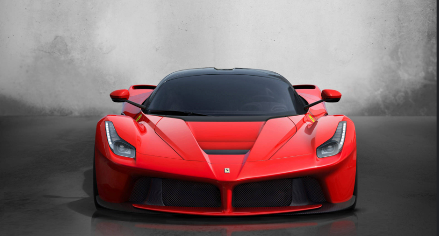
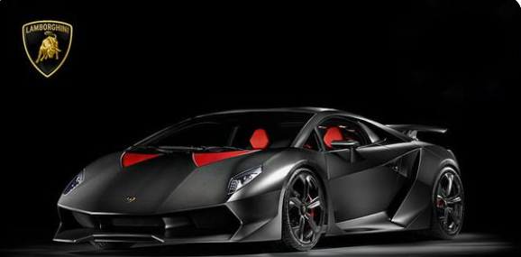
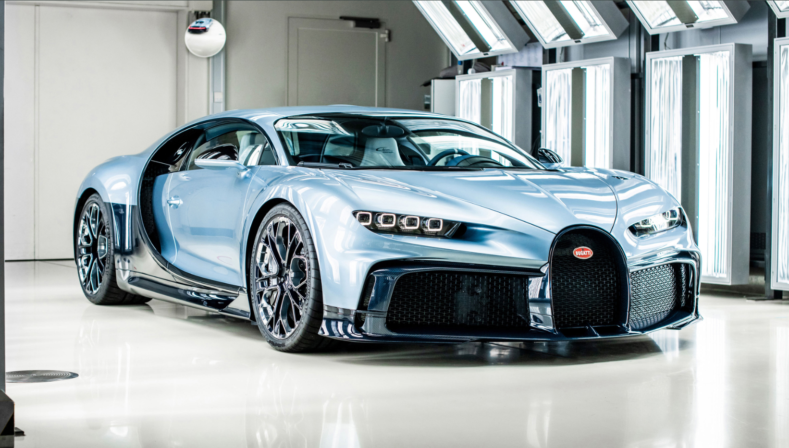
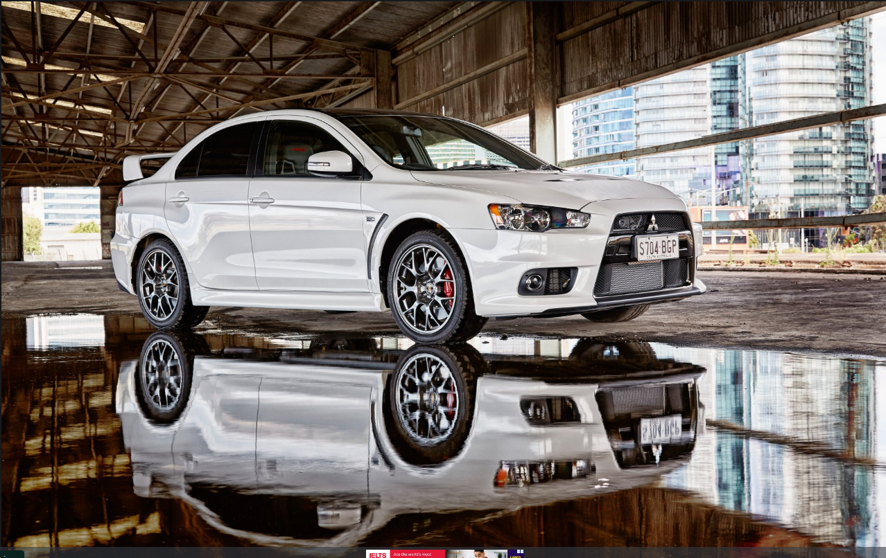

Some knowledge about Ferrari:
|
- History: Founded in 1939 by Enzo Ferrari, the company started as Auto Avio Costruzioni. The first car
branded as a Ferrari was the 125 S, produced in 1947
- Racing Heritage: Ferrari has a storied history in motorsport, particularly in Formula 1. The Scuderia
Ferrari team, established in 1929, is the oldest and most successful team in F1 history, with numerous
championships and legendary drivers like Michael Schumacher and Niki Lauda.
- Iconic Models: Some of the most famous Ferrari models include the Ferrari 250 GTO, Ferrari F40, and the
modern LaFerrari. Each model showcases a blend of cutting-edge technology, performance, and design.
- Design Philosophy: Ferrari cars are known for their sleek, aerodynamic designs and are often considered
works of art. Collaborations with design firms like Pininfarina have resulted in some of the most beautiful
cars in automotive history.
- Performance: Ferraris are renowned for their engineering excellence. They typically feature powerful
engines, advanced aerodynamics, and lightweight materials, contributing to exceptional speed and handling.
- Exclusivity: Ferrari produces a limited number of cars each year, making them highly sought after by
collectors. Customization options allow buyers to tailor their vehicles to their preferences.
- Cultural Impact: Beyond their performance and design, Ferraris have become cultural icons, symbolizing
luxury and success. They frequently appear in films, music, and art.
1 Ferrari:

| Price Oil Filter |
Price Nitro |
Price Tyres |
Price Deisel |
| 120$ |
300$ |
900$ |
50$ |
| Price Seates |
Engine |
Colling System |
Expansion |
| 239$ |
50,000$ |
3500$ |
3900$ |
Some knowledge about Lamborghini Sesto Elemento :
|
- Name and Concept
"Sesto Elemento" translates to "Sixth Element" in Italian, a reference to carbon, which is the sixth element
on the periodic table. This name highlights the extensive use of carbon fiber in the car's construction to
reduce weight.
- Lightweight Design
One of the most notable features of the Sesto Elemento is its ultra-lightweight body. The car weighs just
999 kg (2,202 lbs) due to the heavy use of carbon fiber-reinforced polymer (CFRP) in its chassis, body
panels, suspension components, and even the seats.The lightness is key to its exceptional speed and
handling.
- Performance
Powered by a 5.2-liter V10 engine, the Sesto Elemento delivers 570 horsepower.
It accelerates from 0 to 100 km/h (0 to 62 mph) in just 2.5 seconds, with a top speed exceeding 300 km/h
(186 mph).
The lightweight build and high power-to-weight ratio make it one of the fastest and most agile Lamborghinis
ever built.
- Track-Only Car
The Sesto Elemento is not road-legal; it was designed strictly for track use. Lamborghini produced only 20
units of this car, making it extremely rare and exclusive.
- Aerodynamics and Design
The design is aggressive and futuristic, with sharp lines, prominent air intakes, and a massive rear
diffuser. The entire car is designed for maximum aerodynamic efficiency, improving speed and stability on
the track.
Its minimalistic, race-focused interior has fixed bucket seats molded directly into the chassis, with very
few creature comforts to keep the weight down.
- Innovation
The Sesto Elemento represents Lamborghini’s commitment to innovation, particularly in the use of advanced
materials like carbon fiber composites.
It serves as a technological showcase for the brand’s future direction in supercar engineering.
2 Lamborghini Sesto Elemento :

| Price Oil Filter |
Price Nitro |
Price Tyres |
Price Deisel |
| 400$ |
300$ |
900$ |
50$ |
| Price Seates |
Engine |
Colling System |
Expansion |
| 239$ |
50,000$ |
3500$ |
3900$ |
Some knowledge about Bughaati Shuron :
|
- . Brand History
Founded by Ettore Bugatti in 1909, Bugatti started as a company focused on luxury and racing cars. Ettore
was an Italian-born engineer who combined performance with elegance and fine craftsmanship.
The original Bugatti company became famous for its beautifully designed cars and numerous victories in
motorsports, especially during the 1920s and 1930s.
- Revival by Volkswagen Group
After going dormant for decades, Volkswagen Group revived Bugatti in the late 1990s, transforming it into a
brand focused on producing hypercars with extreme performance and luxury.
The first car under VW ownership was the Bugatti Veyron, which set a new standard for speed, technology, and
luxury.
- Iconic Models Bugatti Veyron (2005–2015)
The Veyron was the first production car to break the 1,000 horsepower barrier, powered by an 8.0-liter
quad-turbocharged W16 engine.
It had a top speed of 407 km/h (253 mph), and could accelerate from 0 to 100 km/h (0-62 mph) in about 2.5
seconds.
The Veyron became famous for its engineering complexity, luxury, and price, often sold for over $1 million.
Bugatti Chiron (2016–Present)
The Chiron is the successor to the Veyron and takes performance to an even higher level. It uses an updated
version of the 8.0-liter W16 engine, producing 1,479 horsepower.
It has a top speed limited to 420 km/h (261 mph) for safety but is capable of much higher speeds under the
right conditions.
The Chiron can accelerate from 0 to 100 km/h in 2.4 seconds and features an incredibly luxurious interior
with top-quality materials and craftsmanship.
Bugatti Divo
Launched in 2018, the Divo is a more track-focused hypercar based on the Chiron. It has similar power (1,479
horsepower) but is lighter and more aerodynamically optimized for handling and cornering, with a top speed
of 380 km/h (236 mph).
Bugatti Centodieci
Limited to only 10 units, the Centodieci is a tribute to the EB110, one of Bugatti’s 1990s-era cars. It
offers 1,600 horsepower and has an exclusive design inspired by the original EB110, with a top speed of 380
km/h (236 mph).
Bugatti La Voiture Noire
Released in 2019, La Voiture Noire was a one-off hypercar that became the most expensive new car ever sold,
priced at over $18 million. It pays homage to the classic Bugatti Type 57 SC Atlantic from the 1930s.
- Engineering Excellence
Bugatti is renowned for its engineering achievements, particularly in creating some of the fastest cars in
the world. The quad-turbo W16 engine used in the Veyron, Chiron, and other models is an example of Bugatti’s
cutting-edge technology.
These cars also feature advanced aerodynamics, all-wheel drive, and highly specialized braking systems,
ensuring that they deliver an unmatched combination of speed, control, and safety.
- Luxury and Craftsmanship
Beyond performance, Bugatti cars are symbols of luxury and exclusivity. Every Bugatti model is built with
the finest materials, including leather, carbon fiber, aluminum, and other high-end components, making each
car a work of art.
Interiors are handcrafted, offering unparalleled customization options to meet the demands of elite buyers.
- Exclusivity and Price
Bugatti cars are among the most expensive vehicles in the world, with prices ranging from a few million
dollars for the Chiron and Veyron to tens of millions for one-off models like the La Voiture Noire.
Production numbers are very limited, making Bugatti vehicles rare and highly collectible.
- Future and Electrification
As the automotive world shifts toward electric power, Bugatti has begun exploring hybrid and electric
technologies. The brand is expected to integrate these technologies into future models while maintaining the
performance and luxury that define Bugatti.
3 Bughaati Shuron:

| Price Oil Filter |
Price Nitro |
Price Tyres |
Price Deisel |
| 300$ |
900$ |
50$ |
120$ |
| Price Seates |
Engine |
Colling System |
Expansion |
| 239$ |
50,000$ |
3500$ |
3900$ |
Some knowledge about Mitsubishi Lancer :
|
- Introduction and Legacy
The Mitsubishi Lancer was first introduced in 1973 as a compact car. Over its lifespan, it went through
several generations, evolving into a versatile vehicle range including sedans, hatchbacks, and performance
models.
It became popular for its affordability, reliability, and sporty versions like the Lancer Evolution (Evo),
which gained a strong reputation in rally racing and car enthusiast circles.
- Generations
The Lancer has gone through multiple generations (about 10 in total), each with notable updates in terms of
design, technology, and performance.
First Generation (1973-1979): The Lancer started as a simple compact car, available in sedan, coupe, and
wagon forms. It was mainly marketed as an economy car.
Subsequent Generations (1980s - early 2000s): The Lancer evolved in design, safety, and performance,
introducing more modern features, better engines, and comfort. The Lancer’s position was solidified globally
as a reliable and affordable sedan.
- Lancer Evolution (Evo)
The most famous version of the Lancer is the Lancer Evolution, commonly known as the Evo, which debuted in
1992. The Evo was a high-performance sports sedan designed for rally racing and gained global fame for its
agility, all-wheel-drive system, and turbocharged engines.
Key characteristics of the Lancer Evo include:
Turbocharged 2.0-liter inline-4 engines: These engines produced between 276 to 440 horsepower, depending on
the version.
All-wheel drive (AWD) system: A major factor in its success in rally racing, providing excellent grip and
handling in all conditions.
0-100 km/h (0-62 mph) in under 5 seconds: In later models, the Evo was extremely fast for a four-door sedan.
Performance-tuned suspension and aerodynamics: Designed for track and rally use, the Evo had a stiff
suspension, large rear spoilers, and aerodynamic enhancements.
There were 10 versions of the Lancer Evolution, with the last model, the Evo X, being produced from 2008 to
2016. The Evo X featured a 2.0-liter turbocharged MIVEC engine and the renowned Super All-Wheel Control
(S-AWC) system, making it a fan favorite for its driving dynamics and advanced technology.
- Lancer's Role in Rally Racing
The Lancer, especially the Evo models, has a rich history in World Rally Championship (WRC) racing. It
dominated the sport in the 1990s, winning multiple championships under famous drivers like Tommi Mäkinen.
This success in rallying helped solidify the Lancer Evo’s image as a performance car, influencing its cult
following in the car enthusiast community.
- Consumer Models
While the Lancer Evolution series focused on high performance, the regular Mitsubishi Lancer was marketed as
an affordable compact sedan, targeting everyday drivers.
Popular models included the Lancer ES, SE, and GT, which offered reliable engines (1.5L-2.4L), decent fuel
economy, and a comfortable ride.
It was also available in different body styles, including four-door sedans and five-door hatchbacks,
offering versatility for families and commuters.
- End of Production
Mitsubishi officially discontinued the Lancer in 2017 after over four decades of production. This decision
was part of the company's strategic shift towards focusing on SUVs and electric vehicles.
The discontinuation marked the end of the Lancer Evolution X, closing a chapter on one of the most beloved
performance sedans in automotive history.
- Legacy and Influence
Even though production has stopped, the Lancer, especially the Evo, remains highly regarded in the
automotive community. The car’s influence is still felt in motorsports, aftermarket tuning, and street
racing culture.
The Evo models, in particular, are highly sought after by collectors and enthusiasts. It has a strong
presence in media, including movies, video games, and motorsports events like Time Attack and Autocross.
- Key Features of the Lancer Evolution X (Last Evo)
Engine: 2.0-liter, 4-cylinder, turbocharged MIVEC engine producing around 291 horsepower.
Transmission: 5-speed manual or 6-speed dual-clutch automatic (SST).
Super All-Wheel Control (S-AWC): An advanced AWD system with active yaw control, contributing to superior
handling and traction.
0-100 km/h: Achieved in 4.5 seconds.
Design: Aggressive styling with a large rear wing, muscular body lines, and a functional air intake on the
hood.
4 Mitsubishi Lancer:

| Price Oil Filter |
Price Nitro |
Price Tyres |
Price Deisel |
| 300$ |
900$ |
50$ |
120$ |
| Price Seates |
Engine |
Colling System |
Expansion |
| 239$ |
50,000$ |
3500$ |
3900$ |